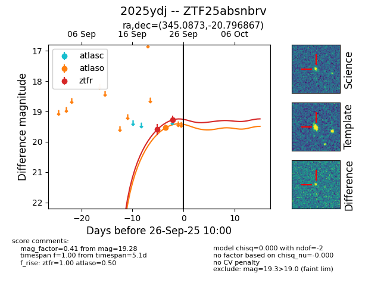
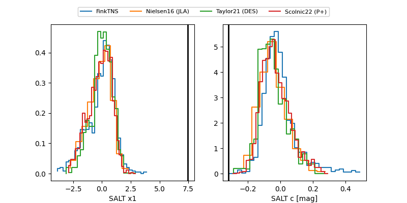

FINK: ZTF25absnbrv
Lasair: ZTF25absnbrv
ALeRCE: ZTF25absnbrv
TNS: 2025ydj
YSE: 2025ydj
ZTF25absnbrv (ztf,fink)
2025ydj (tns,yse)
equatorial (ra, dec) = (345.0873,-20.79687)
galactic (l, b) = (40.9263,-63.90429)


last atlaso=19.54, ztfr=19.28
1 atlaso, 2 ztfr detections